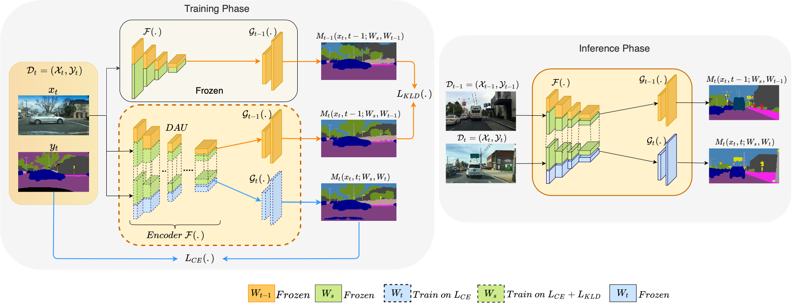
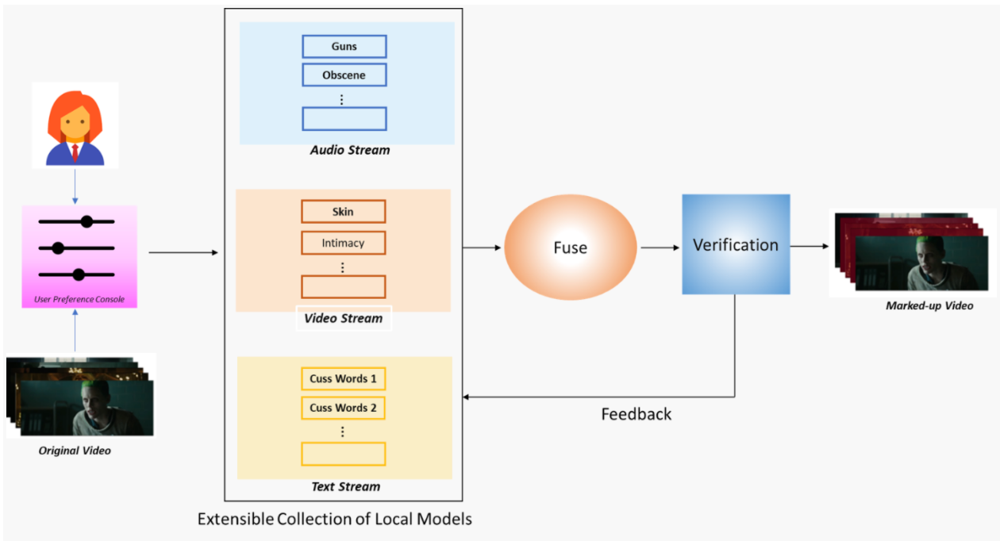
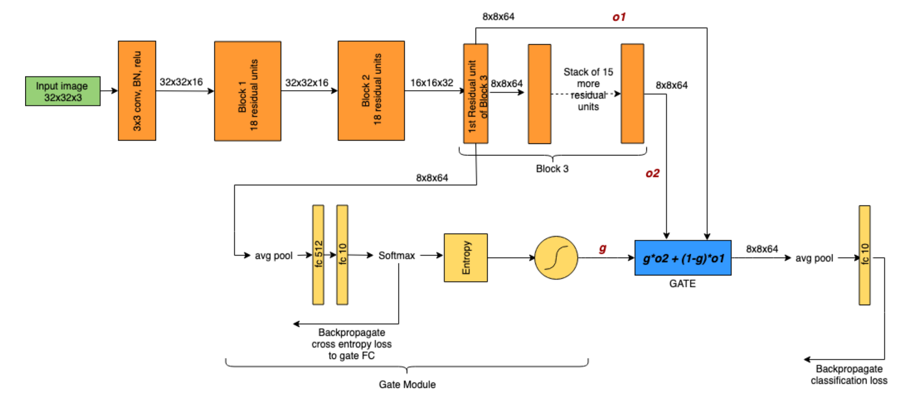
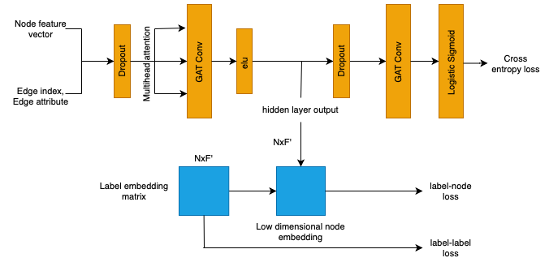
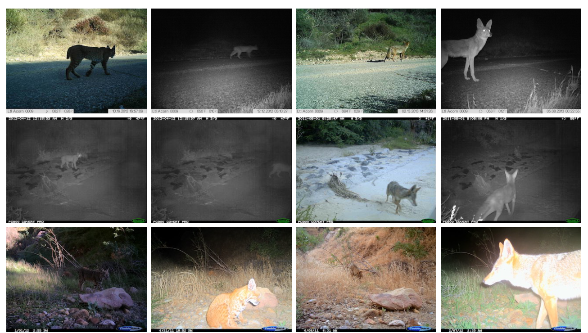

.png)
I'm a Research Fellow in computer vision and deep learning at the Center for Visual Information Technology (CVIT), IIIT Hyderabad. I have been working in autonomous driving domain using computer vision and deep learning for a span of two years under the guidance of excellent team of advisors, Prof. C V Jawahar, Prof. Vineeth N Balasubramanian, Prof. Chetan Arora and Dr. Anbumani Subramanian. It has been a really great learning experience to grow in this field, that I am extremely passionate about. I worked on various amazing projects in this span of time. One of which has been published at WACV 2022 conference and other is under review at ECCV. One of our works is also under patenting process. I have also have been a reviewer at WACV conference. Overall it has really been a wonderful experience. Previously I had been working in IT sector at Barclays Inc., where I had good exposure to develop end-to-end systems and understand how things work at corporate level. It was a drastic career change (from Barclays to CVIT, IIITH), that I worked hard for; to pursue my passion as my profession and grow further in that path. I completed my Bachelors in Computer Science and Engineering in 2018 from Savitribai Phule Pune University (SPPU), India where I was advised by Dr. Sudeep Thepade .
Research Interests: Back during my undergraduate course in Computer Science, I used to wonder, "What really would be the next revolution in this field?" Back then enjoying my programming courses and being dramatically fascinated by technologies like Jarvis, Siri I thought, Mind Reading Computers would just be the next remarkable revolution. Curiosity about developing Mind-Reading Computers drove me towards emerging world-changing technologies in the field of Artificial Intelligence. I am fascinated by research works in object-Object interactions or Object-Scene interactions and their relationship / intent understanding. My current research work lies in the intersection of vision and language, using explainable AI for problems like pedestrian intent prediction and further exploring visual and abductive reasoning for the same. Some of my previous research works include interesting domains like unsupervised domain adaptation, spatio-temporal reasoning using graph neural networks, generative adversarial networks to name a few.
Volunteering: I belive in giving back to the society what we are fortunate enough to have gained. I am selected to be a Portfolio Project Mentor for the Changemakers in AI program at AI4ALL. Excited to spend my summer mentoring the students at a platform like AI4ALL, it's a two-way learning process I believe. Previously I had also organised Organised HOUR OF CODE as an initiative for International Coding Week, to teach school students Coding and Algorithmic Concepts by innovative and simple games.
My non-professional interests include watching Sci-Fi movies, Favourite being Iron Man. Reading a lot about new tech stuffs as well as trending articles and implementations related to my field of interest on Google and Twitter. I’m always up for interesting collaborations or just random chats on AI, feel free to drop me a message on Linkedin or via email.


Summer 2022
Aug 2020-Current
Aug 2020-Current
2018-2020
2015-2018
Research
|

|
Multi-Domain Incremental Learning for Semantic SegmentationIEEE Winter Conference on Applications of Computer Vision, WACV 2022 |
|

|
Towards an AI Infused System for Objectionable Content Detection in OTTIn recent years, there has been a substantial increase in the consumption of OTT content. The ease of access and lack of regulatory checks in the online platforms have further led to a lot of differences in the content and the consuming audience. A lot of these scenarios might make majority of content unsuitable for family or children viewing. In this work, we propose a framework to address this problem by proposing filters which detect and highlight objectionable content in videos. We propose a framework which leverages multiple modalities like videos, subtitle text and audio to detect violence, explicit adult content, offensive speech in videos. |
|

|
Memorization and Generalization in CNNs using Soft Gating MechanismsReport / Code / Suboptimal ResNet Gating Mechanisms A deep neural network learns patterns to hypothesize a large subset of samples that lie in-distribution and it memorises any out-of-distribution samples. While fitting to noise, the generalisation error increases and the DNN performs poorly on test set. In this work, we aim to examine if dedicating different layers to the generalizable and memorizable samples in a DNN could simplify the decision boundary learnt by the network and lead to improved generalization in DNNs. While the initial layers that are common to all examples tend to learn general patterns, we dedicate certain deeper additional layers in the network to memorise the out-of-distribution examples. |
|

|
ML-GAT: Multi-label Node Classification using Enhanced Graph Attention NetworkMany real-world graph based problems require the assignment of more than one label to each node instance in the graph. We study here multi-label node classification using enhanced graph neural networks. We propose a novel architecture, Multi-Label Graph attention Network (ML-GAT) that leverages the applicability of the attention based Graph Attention Network (GAT) to efficient inductive semi-supervised multi-label classification by augmenting complex inter-label and node-label dependencies implicit in the graph structure to the learning process. Our model achieves 15.01% increase over the current state-of-the-art ML-GCN framework for Facebook dataset and 6% increase for the Yeast dataset. We analyse the influence of dropout and training size; and infer the relative importance of node-label and label-label dependencies. *Denotes equal contribution |
|

|
Visual Wildlife Monitoring: Domain Generalization for Animal Detection in the WildI worked towards benchmarking species detection in camera trap images from unconstrained wild environments to generalise to new environments using state-of-the-art Faster-RCNN variants. The Catech Camera Traps dataset (CCT20) is an unconstrained wild environment camera traps dataset designed to study domain generalization for animal species. It contains test data collected from both, locations that are same as train data (cis) as well as locations different from train data (trans). Factors like illumination, motion blur, occlusion, camouflage and perspective can severely affect the performance of species recognition systems. We bridged the generalization gap between cis-locations (test domain same as train) and trans-locations (unseen test domain) performance from 26.8% to 22.9% by using state-of-the-art Faster-RCNN variants. More details about my research journey can be found here. |
News and Miscellaneous
January, 2022 |
Presented our work on 'Multi-domain incremental learning for semantic segmentation' at WACV 2022 |
December, 2021 |
Funded to be a Super Volunteer, WiML Workshop @ NeurIPS 2021; Attended NeurIPS 2021 Workshop on Machine Learning for Autonomous Driving |
August, 2021 |
Sub Reviewer, BMVC 2021 |
September, 2020 |
Gave a tutorial on Geometric Deep Learning and Graph Convolutional Networks (GCN) |
Forked and modified from Viraj Prabhu's adaptation of Pixyll theme